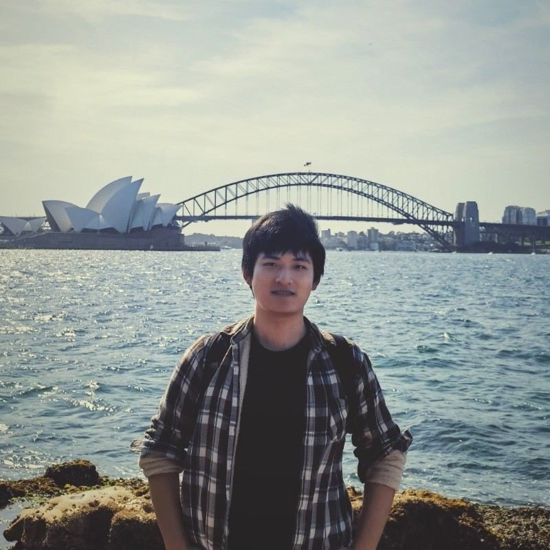
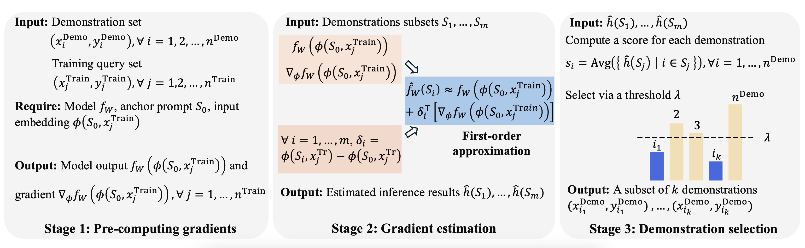
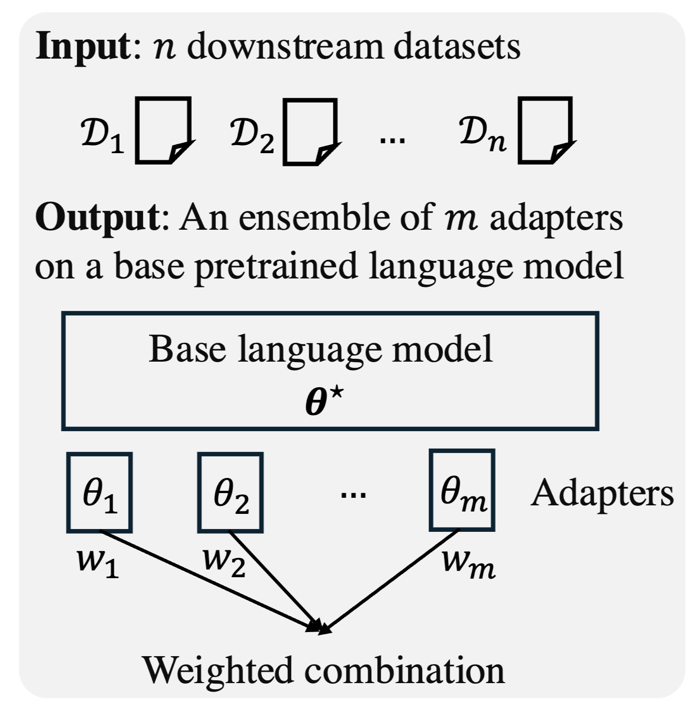
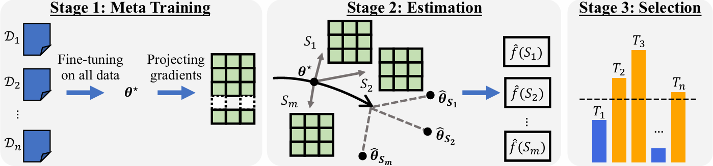

|
Ziniu (Michael) Zhang I am a Ph.D student of Khoury College of Computer Sciences in Northeastern University starting from Fall 2024. I work with Prof. Hongyang R. Zhang. My name can be pronounced as "Tzu-niu Chang". Before my PhD study, I was a visiting student in the University of Queensland advised by Prof. Yadan Luo and a research intern in MMLAB@NTU advised by Prof. Ziwei Liu I am extremely grateful to all professors, mentors, and friends who have helped me on my research journey. I obtained my bachelor's degree in Computer Science (Honors College) from University of Electronic Science and Technology of China (UESTC) in 2024. Email / Google Scholar / Github / LinkedIn |
 |
{kind=link}
Research
My research interest now aligns with fundamental machine learning and data mining.
|
|

|
Linear-Time Demonstration Selection for In-Context Learning via Gradient Estimation
Ziniu Zhang*, Zhenshuo Zhang*, Dongyue Li, Lu Wang, Jennifer Dy, Hongyang R. Zhang EMNLP 2025 Project / Paper |
|

|
Efficient Ensemble for Fine-tuning Language Models on Multiple Datasets
Dongyue Li, Ziniu Zhang, Lu Wang, Hongyang R. Zhang ACL 2025 Project / Paper |
|

|
Scalable Fine-tuning from Multiple Data Sources: A First-Order Approximation Approach
Dongyue Li*, Ziniu Zhang*, Lu Wang, Hongyang R. Zhang EMNLP 2024 (Findings) Project / Paper |

|
MMInA: Benchmarking Multihop Multimodal Internet Agents
Shulin Tian*, Ziniu Zhang*, Liangyu Chen*, Ziwei Liu ACL 2025 (Findings) Project / Paper / Demo |
Awards |
|
- Silver medal in the 47th ACM-ICPC International Collegiate Programming Contest Asian Regional (Rank: 48/511)
- Silver medal in the 8th China Collegiate Programming Contest (CCPC). - Bronze medal in the 7th China Collegiate Programming Contest (CCPC). - First Prize in the 23rd National Olympiad in Informatics in Provinces (NOIP) (Senior group). |
Service- Reviewer: AAAI (2025), AISTATS (2025, 2026), DMLR (2024, 2025).- Volunteer in the 10th China Collegiate Programming Contest (CCPC) Final. - Member of the technical group of 2021 National Olympiad in Informatics in Provinces (NOIP). |
Backyard- I'm addicted to badminton and have won several medals in UESTC. My favorite player is Lee Chong Wei.- I'm also passionate about cycling. I have completed several routes exceeding 100 km. My goal is to cycle along G318 to Lhasa. - I served as the major volunteer in 31st FISU World University Games. |
|
Last update: 7/6/2025 Credit to Jon Barron. |